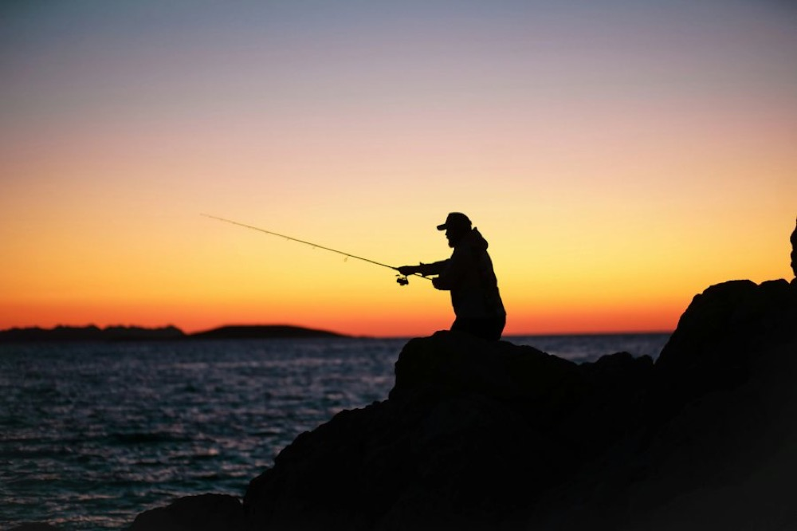
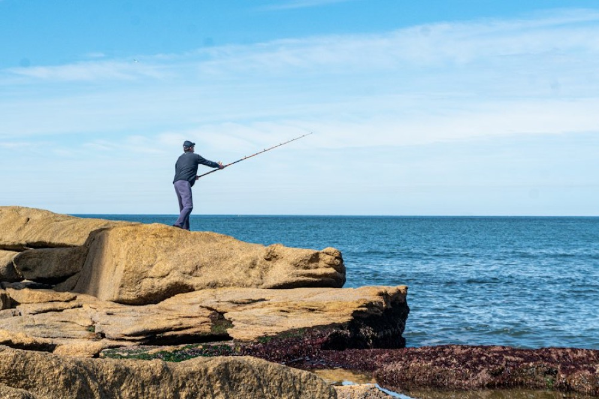
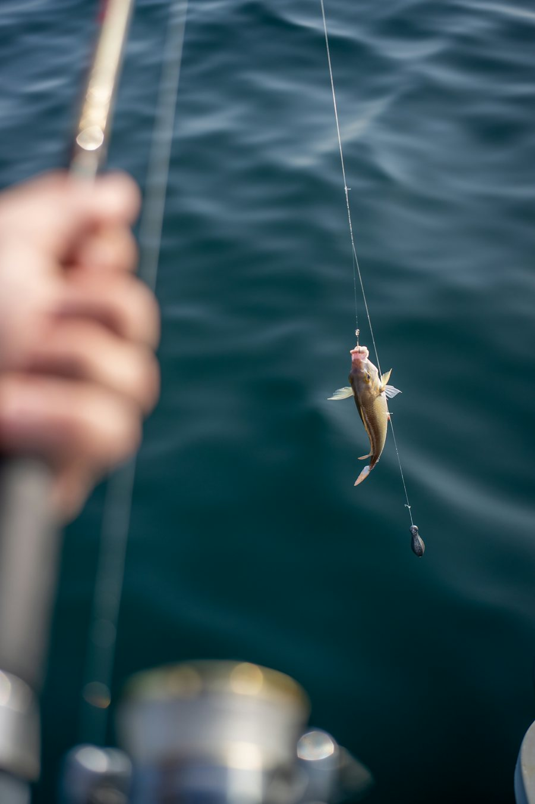
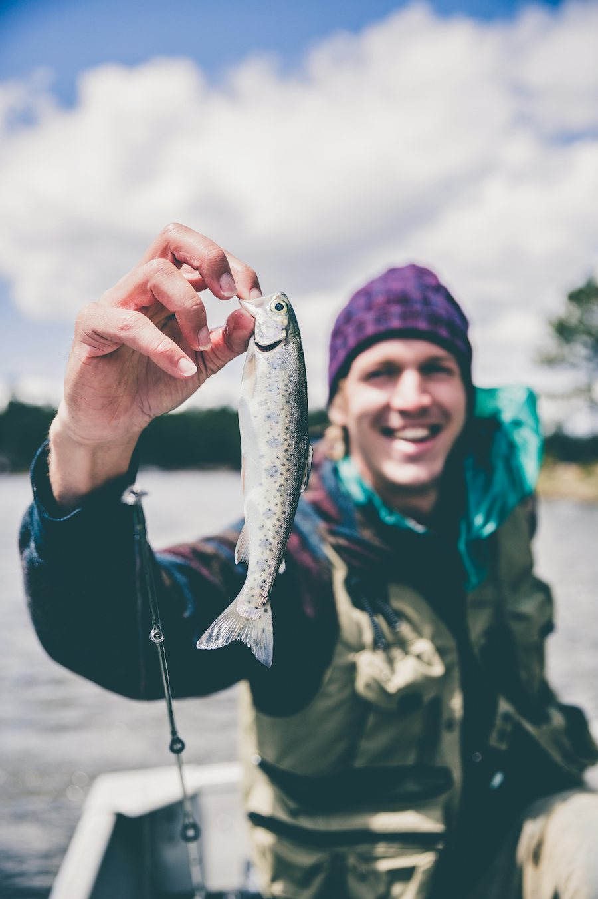
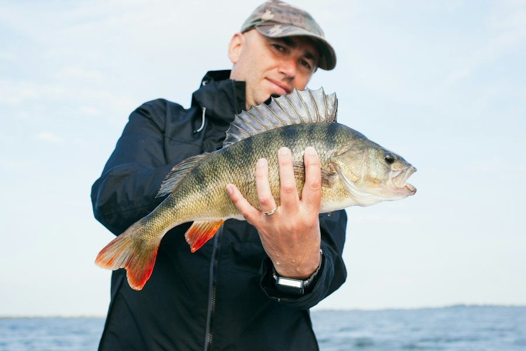
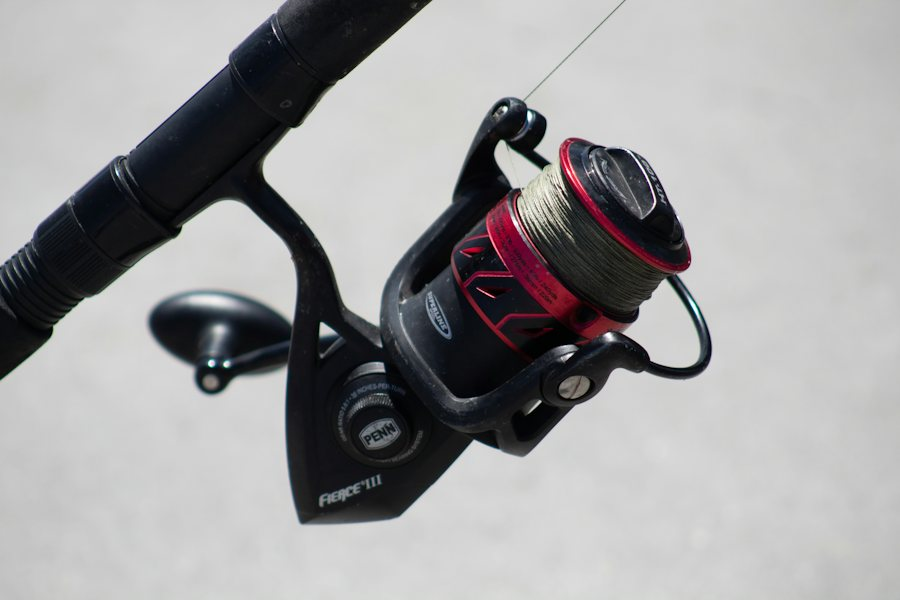
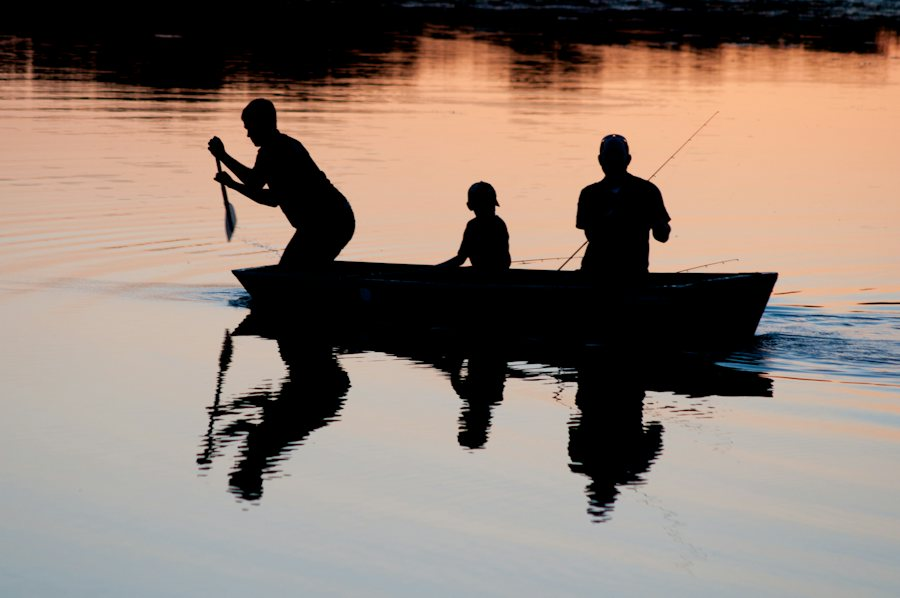

<meta charset="utf-8">
<meta name="viewport" content="width=device-width, initial-scale=1, viewport-fit=cover">
<title>The Whole Season</title>
<link rel="preconnect" href="https://fonts.gstatic.com" crossorigin>
<link rel="stylesheet" href="https://fonts.googleapis.com/css2?family=League+Gothic&family=Jost:ital,wght@0,400;0,500;0,600;1,400&display=swap">
<style>
  :root {
    --bg: #FFFFFF; --bg-2: #F4F4F2; --ink: #0B0909; --ink-2: #4E4A46; --ink-3: #8A8580;
    --line: rgba(11, 9, 9, 0.14); --contour: rgba(11, 9, 9, 0.16);
    --teal: #34ADBD; --teal-ink: #062A2F; --teal-text: #17727F;
    --black: #0B0909; --black-2: #151212; --paper: #F4F1EC; --paper-2: #B9B3AC;
    --ease: cubic-bezier(0.4, 0, 0.2, 1);
    color-scheme: light;
  }
  @media (prefers-color-scheme: dark) {
    :root:not([data-theme="light"]) { --bg: #0B0909; --bg-2: #151212; --ink: #F4F1EC; --ink-2: #B9B3AC; --ink-3: #7E7873; --line: rgba(244, 241, 236, 0.14); --contour: rgba(244, 241, 236, 0.13); --teal-text: #5FC6D3; color-scheme: dark; }
  }
  :root[data-theme="dark"] { --bg: #0B0909; --bg-2: #151212; --ink: #F4F1EC; --ink-2: #B9B3AC; --ink-3: #7E7873; --line: rgba(244, 241, 236, 0.14); --contour: rgba(244, 241, 236, 0.13); --teal-text: #5FC6D3; color-scheme: dark; }

  html { background: var(--bg); scroll-behavior: smooth; }
  body { margin: 0; background: var(--bg); color: var(--ink); font-family: "Jost", "Avenir Next", "Helvetica Neue", Arial, sans-serif; font-size: 16px; line-height: 1.6; -webkit-font-smoothing: antialiased; overflow-x: hidden; }
  *, *::before, *::after { box-sizing: border-box; }
  a { color: inherit; text-decoration: none; }
  button { font: inherit; color: inherit; background: none; border: 0; padding: 0; cursor: pointer; }
  p, h1, h2, h3, ul { margin: 0; } ul { padding: 0; list-style: none; }
  :focus-visible { outline: 2px solid var(--teal); outline-offset: 3px; }
  img { max-width: 100%; display: block; }
  .g { font-family: "League Gothic", "Oswald", "Arial Narrow", Impact, sans-serif; font-weight: 400; text-transform: uppercase; letter-spacing: 0.02em; line-height: 0.95; }
  .lab { font-size: 13px; letter-spacing: 0.18em; text-transform: uppercase; font-weight: 500; }
  .num { font-variant-numeric: tabular-nums; }
  .wrap { width: min(1200px, 100% - 48px); margin-inline: auto; }
  @media (max-width: 640px) { .wrap { width: calc(100% - 32px); } }

  /* header, black in both themes like the reference */
  .hdr { position: sticky; top: 0; z-index: 30; height: 60px; background: var(--black); color: var(--paper); border-bottom: 1px solid rgba(244,241,236,0.08); }
  .hdr .wrap { height: 60px; display: grid; grid-template-columns: 1fr auto 1fr; align-items: center; gap: 16px; }
  .hdr nav { display: flex; gap: 22px; }
  .hdr nav a { font-family: "League Gothic", Impact, sans-serif; text-transform: uppercase; letter-spacing: 0.06em; font-size: 19px; opacity: 0.9; transition: color 0.15s var(--ease); }
  .hdr nav a:hover { color: var(--teal); }
  .hdr .mark { font-family: "League Gothic", Impact, sans-serif; font-size: 28px; text-transform: uppercase; letter-spacing: 0.06em; display: flex; align-items: center; gap: 10px; }
  .hdr .mark svg { width: 34px; height: 22px; }
  .hdr .right { display: flex; justify-content: flex-end; align-items: center; gap: 14px; }
  .toggle { width: 40px; height: 40px; display: inline-flex; align-items: center; justify-content: center; border: 1px solid rgba(244,241,236,0.25); color: var(--paper); border-radius: 999px; transition: background 0.2s, transform 0.3s var(--ease); }
  .toggle:hover { background: rgba(244,241,236,0.08); }
  .toggle svg { width: 20px; height: 20px; }
  .toggle .moon { display: none; }
  :root[data-theme="dark"] .toggle .sun { display: none; } :root[data-theme="dark"] .toggle .moon { display: block; }
  @media (prefers-color-scheme: dark) { :root:not([data-theme="light"]) .toggle .sun { display: none; } :root:not([data-theme="light"]) .toggle .moon { display: block; } }
  .cta .short { display: none; }
  .cta { display: inline-flex; align-items: center; justify-content: center; height: 44px; padding: 0 22px; background: var(--teal); color: var(--teal-ink); font-family: "League Gothic", Impact, sans-serif; font-size: 22px; letter-spacing: 0.08em; text-transform: uppercase; transition: transform 0.15s var(--ease), filter 0.15s; }
  .cta:hover { filter: brightness(1.06); } .cta:active { transform: scale(0.98); }
  @media (max-width: 860px) { .hdr nav { display: none; } .hdr .wrap { grid-template-columns: auto 1fr; } .hdr .mark { justify-self: start; } }
  @media (max-width: 480px) { .cta .full { display: none; } .cta .short { display: inline; } .hdr .cta { padding: 0 16px; } .hdr .right { gap: 10px; } }

  /* hero */
  .hero { position: relative; height: clamp(560px, calc(100dvh - 60px), 860px); overflow: hidden; background: var(--black); color: var(--paper); }
  .hero .ph { position: absolute; inset: -12% 0 0; will-change: transform; }
  @supports (animation-timeline: view()) {
    .hero .ph { animation: para-hero linear both; animation-timeline: view(); animation-range: cover 0% cover 100%; }
    .feat .ph { animation: para-feat linear both; animation-timeline: view(); animation-range: cover 0% cover 100%; }
    .thread { animation: draw linear both; animation-timeline: view(); animation-range: entry 10% cover 70%; }
  }
  @keyframes para-hero { from { transform: translate3d(0, -6%, 0); } to { transform: translate3d(0, 8%, 0); } }
  @keyframes para-feat { from { transform: translate3d(0, -8%, 0); } to { transform: translate3d(0, 6%, 0); } }
  @property --draw { syntax: "<number>"; initial-value: 1; inherits: true; }
  @keyframes draw { from { --draw: 1; } to { --draw: 0; } }
  .thread #tmask { stroke-dashoffset: var(--draw); }
  .hero .ph img { width: 100%; height: 100%; object-fit: cover; object-position: 50% 45%; }
  .hero::after { content: ""; position: absolute; inset: 0; background: linear-gradient(180deg, rgba(11,9,9,0.35) 0%, rgba(11,9,9,0) 30%, rgba(11,9,9,0.05) 55%, rgba(11,9,9,0.82) 100%); }
  .hero .in { position: absolute; inset: 0 0 90px 0; z-index: 2; display: flex; flex-direction: column; align-items: center; justify-content: center; text-align: center; gap: 18px; padding: 24px; }
  .hero h1 { font-size: clamp(48px, 6.6vw, 96px); text-wrap: balance; max-width: 30ch; text-shadow: 0 2px 24px rgba(0,0,0,0.35); }
  .hero p { max-width: 52ch; font-size: 18px; color: rgba(244,241,236,0.9); text-wrap: pretty; }
  .hero .up { opacity: 0; transform: translateY(22px); transition: opacity 0.7s var(--ease), transform 0.8s var(--ease); }
  .hero.in .up { opacity: 1; transform: none; }
  .hero.in .up:nth-child(2) { transition-delay: 0.12s; } .hero.in .up:nth-child(3) { transition-delay: 0.24s; }
  .rv { opacity: 0; transform: translateY(26px); transition: opacity 0.6s var(--ease), transform 0.7s var(--ease); transition-delay: calc(var(--i, 0) * 90ms); }
  .rv.in { opacity: 1; transform: none; }
  .hero .cta { height: 52px; font-size: 26px; padding: 0 28px; }
  .torn { position: absolute; left: 0; right: 0; bottom: -2px; height: 90px; z-index: 3; pointer-events: none; }
  .torn svg { width: 100%; height: 100%; display: block; }

  /* section grammar */
  section.band { position: relative; padding-block: 88px; }
  .lab-rule { display: flex; align-items: center; gap: 14px; color: var(--ink-2); }
  .lab-rule::after { content: ""; width: 56px; height: 1px; background: var(--teal); }
  h2.g { font-size: clamp(44px, 6vw, 84px); }
  .lead { font-size: 17px; color: var(--ink-2); max-width: 46ch; text-wrap: pretty; }

  /* the how section with the dashed line and the phone */
  .how { display: grid; grid-template-columns: 1fr 340px; gap: 64px; align-items: start; }
  .screen { scrollbar-width: thin; scrollbar-color: rgba(52,173,189,0.6) transparent; }
  .how .copy { display: flex; flex-direction: column; gap: 26px; padding-top: 16px; position: sticky; top: 84px; }
  .steps { display: flex; flex-direction: column; margin-top: 8px; border-left: 2px dashed var(--teal); }
  .steps li { display: grid; grid-template-columns: 64px minmax(0, 1fr); gap: 18px; padding: 18px 0 18px 22px; align-items: start; position: relative; transition: opacity 0.4s var(--ease); opacity: 0.45; }
  .steps li::before { content: ""; position: absolute; left: -7px; top: 30px; width: 12px; height: 12px; border-radius: 999px; background: var(--bg); border: 2px solid var(--teal); transition: background 0.3s, transform 0.3s var(--ease); }
  .steps li.on { opacity: 1; } .steps li.on::before { background: var(--teal); transform: scale(1.25); }
  .steps li.done { opacity: 0.8; } .steps li.done::before { background: var(--teal); }
  .steps .n { font-family: "League Gothic", Impact, sans-serif; font-size: 56px; line-height: 0.9; letter-spacing: 0.02em; color: var(--ink-3); transition: color 0.3s; }
  .steps li.on .n, .steps li.done .n { color: var(--teal-text); }
  .steps b { display: block; font-family: "League Gothic", Impact, sans-serif; font-weight: 400; font-size: 28px; letter-spacing: 0.04em; text-transform: uppercase; line-height: 1; margin-bottom: 6px; }
  .steps p { font-size: 15px; color: var(--ink-2); line-height: 1.5; max-width: 40ch; }
  .play { display: inline-flex; align-items: center; gap: 10px; align-self: flex-start; }
  .play svg { width: 20px; height: 20px; }
  .note { font-size: 13px; color: var(--ink-3); text-align: center; margin-top: 10px; }
  .card { transition: transform 0.5s var(--ease); } .card:hover { transform: translateY(-6px); }
  .card img { transition: transform 0.7s var(--ease); } .card:hover img { transform: scale(1.04); }
  .thread { position: absolute; left: max(12px, calc((100% - 1200px) / 2 - 56px)); top: 0; bottom: 0; width: 60px; pointer-events: none; z-index: 1; }
  .thread svg { width: 100%; height: 100%; }
  @media (max-width: 1000px) { .how { grid-template-columns: 1fr; gap: 36px; } .thread { left: 2px; width: 28px; } .how .copy { padding-left: 24px; position: static; } .steps .n { font-size: 44px; } .steps li { grid-template-columns: 52px minmax(0, 1fr); padding: 14px 0 14px 18px; } }
  @media (max-width: 640px) {
    .hero { height: clamp(600px, calc(100vh - 60px), 760px); } .hero .in { bottom: 84px; gap: 14px; } .hero h1 { font-size: clamp(52px, 17vw, 72px); } .hero p { font-size: 16px; } .hero .cta { height: 48px; font-size: 22px; }
    .torn { height: 56px; }
    section.band { padding-block: 56px; }
    .device { padding: 10px; border-radius: 46px; box-shadow: 0 24px 60px rgba(0,0,0,0.4), inset 0 0 0 2px #2C2C2E; zoom: 0.86; max-width: 400px; } .device::before { top: 20px; width: 84px; height: 24px; margin-left: -42px; } .phone { height: 760px; border-radius: 36px; } .now .top { top: 56px; }
    .how .copy { padding-left: 20px; }
    .media { display: flex; overflow-x: auto; scroll-snap-type: x mandatory; gap: 10px; margin-top: 36px; padding-bottom: 6px; scrollbar-width: none; }
    .media::-webkit-scrollbar { display: none; }
    .media .tile { flex: 0 0 74%; scroll-snap-align: start; }
    .feat { padding-block: 84px 72px; } .cards { margin-top: 32px; gap: 12px; }
    .record h3 { font-size: 40px; } .record .big { font-size: 30px; } .record .b { padding: 20px 18px 22px; }
    .join { padding-block: 40px; } .join .f { padding: 28px 22px 30px; }
    .readouts { padding: 16px 16px 4px; } .ro .v { font-size: 30px; } .ro + .ro { padding-left: 10px; } .ro { padding-right: 8px; }
    .bar { grid-template-columns: repeat(4, minmax(0, 1fr)) 104px; } .bar a { font-size: 16px; letter-spacing: 0.04em; } .bar .log { font-size: 20px; }
    .now { height: 280px; } .now h1 { font-size: 46px; }
  }
  .media { display: grid; grid-template-columns: repeat(3, minmax(0, 1fr)); gap: 14px; margin-top: 56px; }
  .tile { position: relative; aspect-ratio: 4 / 3; overflow: hidden; background: var(--black-2); }
  .tile img { width: 100%; height: 100%; object-fit: cover; transition: transform 0.6s var(--ease); }
  .tile:hover img { transform: scale(1.04); }
  .tile .plus { position: absolute; left: 50%; top: 50%; width: 44px; height: 44px; margin: -22px 0 0 -22px; border-radius: 999px; background: rgba(11,9,9,0.55); border: 1px solid rgba(244,241,236,0.5); color: var(--paper); display: flex; align-items: center; justify-content: center; font-size: 26px; line-height: 1; }
  .tile .cap { position: absolute; left: 14px; bottom: 12px; color: var(--paper); font-family: "League Gothic", Impact, sans-serif; text-transform: uppercase; letter-spacing: 0.06em; font-size: 20px; text-shadow: 0 1px 8px rgba(0,0,0,0.6); }

  /* features band */
  .feat { position: relative; color: var(--paper); background: var(--black); overflow: hidden; padding-block: 120px 96px; }
  .feat .ph { position: absolute; inset: -14% 0 0; will-change: transform; }
  .feat .ph img { width: 100%; height: 100%; object-fit: cover; }
  .feat .ph::after { content: ""; position: absolute; inset: 0; background: rgba(11,9,9,0.35); }
  .feat .torn { top: -2px; bottom: auto; transform: scaleY(-1); }
  .feat .torn.bot { top: auto; bottom: -2px; transform: none; }
  .feat h2 { text-align: center; position: relative; text-shadow: 0 2px 20px rgba(0,0,0,0.4); }
  .cards { position: relative; display: grid; grid-template-columns: repeat(3, minmax(0, 1fr)); gap: 16px; margin-top: 48px; }
  .card { background: var(--black); color: var(--paper); display: flex; flex-direction: column; position: relative; }
  .card.wide { grid-column: span 2; flex-direction: row; }
  .card.wide img { width: 58%; aspect-ratio: auto; min-height: 320px; }
  .card.wide .b { justify-content: flex-end; }
  .card::before { content: ""; position: absolute; right: 0; top: 0; width: 0; height: 0; border-style: solid; border-width: 0 40px 40px 0; border-color: transparent var(--teal) transparent transparent; }
  .card img { width: 100%; aspect-ratio: 4 / 3; object-fit: cover; }
  .card .b { padding: 22px 22px 26px; display: flex; flex-direction: column; gap: 10px; }
  .card h3 { font-size: 34px; }
  .card p { color: var(--paper-2); font-size: 15px; }
  @media (max-width: 1000px) { .cards { grid-template-columns: 1fr 1fr; } .card.wide { grid-column: span 2; } }
  @media (max-width: 640px) { .cards { grid-template-columns: 1fr; } .card.wide { grid-column: auto; flex-direction: column; } .card.wide img { width: 100%; aspect-ratio: 4 / 3; min-height: 0; } }

  /* the record section with contours */
  .rec { background: var(--bg-2); overflow: hidden; }
  .contour { position: absolute; pointer-events: none; overflow: visible; -webkit-mask-image: radial-gradient(ellipse 50% 50% at 50% 50%, #000 20%, rgba(0,0,0,0.6) 55%, transparent 96%); mask-image: radial-gradient(ellipse 50% 50% at 50% 50%, #000 20%, rgba(0,0,0,0.6) 55%, transparent 96%); animation: drift 26s ease-in-out infinite alternate; }
  @keyframes drift { from { transform: translate3d(0, 0, 0); } to { transform: translate3d(-22px, -14px, 0); } }
  .contour path { fill: none; stroke: var(--contour); stroke-width: 1; stroke-linejoin: round; stroke-linecap: round; }
  .rec .contour { left: -8%; bottom: -10%; width: 70%; height: 120%; }
  .recgrid { position: relative; display: grid; grid-template-columns: 1fr 1.1fr; gap: 56px; align-items: center; }
  @media (max-width: 900px) { .recgrid { grid-template-columns: 1fr; } }
  .record { background: var(--black); color: var(--paper); position: relative; }
  .record::before { content: ""; position: absolute; right: 0; top: 0; border-style: solid; border-width: 0 44px 44px 0; border-color: transparent var(--teal) transparent transparent; z-index: 1; }
  .record img { width: 100%; aspect-ratio: 3 / 2; object-fit: cover; }
  .record .b { padding: 24px 26px 28px; display: flex; flex-direction: column; gap: 16px; }
  .record .hl { display: flex; justify-content: space-between; align-items: baseline; gap: 16px; }
  .record h3 { font-size: 46px; }
  .record .big { font-family: "League Gothic", Impact, sans-serif; font-size: 40px; letter-spacing: 0.03em; }
  .kv { display: grid; grid-template-columns: repeat(2, minmax(0, 1fr)); gap: 12px 24px; }
  .kv div { display: flex; flex-direction: column; border-top: 1px dashed rgba(52,173,189,0.7); padding-top: 8px; }
  .kv .k { font-size: 12px; letter-spacing: 0.16em; text-transform: uppercase; color: var(--paper-2); }
  .kv .v { font-size: 17px; font-weight: 500; }
  .kv .v i { font-style: normal; color: var(--paper-2); font-weight: 400; }
  .record .prov { color: var(--paper-2); font-size: 14px; border-top: 1px solid rgba(244,241,236,0.12); padding-top: 12px; }

  /* the teal band */
  .join { background: var(--teal); padding-block: 72px; }
  .join .box { background: var(--black); color: var(--paper); display: grid; grid-template-columns: 1fr 1.2fr; }
  .join .box img { width: 100%; height: 100%; object-fit: cover; min-height: 280px; }
  .join .f { padding: 40px 44px; display: flex; flex-direction: column; gap: 22px; }
  .join h2 { font-size: clamp(40px, 5vw, 64px); }
  .field { display: flex; flex-direction: column; gap: 6px; }
  .field label { font-size: 13px; letter-spacing: 0.14em; text-transform: uppercase; color: var(--paper-2); }
  .field input { background: transparent; border: 0; border-bottom: 1px dashed var(--teal); color: var(--paper); font: inherit; padding: 8px 0; outline: none; }
  .field input:focus { border-bottom-style: solid; }
  .btn-white { display: inline-flex; align-items: center; justify-content: center; height: 48px; padding: 0 26px; background: var(--paper); color: var(--black); font-family: "League Gothic", Impact, sans-serif; font-size: 22px; letter-spacing: 0.08em; text-transform: uppercase; align-self: flex-start; }
  @media (max-width: 800px) { .join .box { grid-template-columns: 1fr; } .join .box img { min-height: 200px; } }

  footer { background: var(--black); color: var(--paper-2); position: relative; overflow: hidden; padding-block: 56px 40px; }
  footer .contour { right: -6%; top: -20%; width: 64%; height: 140%; }
  footer .contour path { stroke: rgba(244,241,236,0.12); }
  footer .wrap { position: relative; display: grid; grid-template-columns: 1fr auto; gap: 40px; align-items: start; }
  footer .cols { display: flex; gap: 48px; border-left: 1px dashed var(--teal); padding-left: 32px; }
  footer .cols a { display: block; font-family: "League Gothic", Impact, sans-serif; text-transform: uppercase; letter-spacing: 0.08em; font-size: 20px; color: var(--paper); margin-bottom: 8px; }
  footer .small { font-size: 13px; }
  @media (max-width: 700px) { footer .wrap { grid-template-columns: 1fr; } footer .cols { border-left: 0; padding-left: 0; } }

  /* ============ the phone ============ */
  .device { position: relative; width: 100%; max-width: 420px; margin-inline: auto; padding: 14px; background: #0E0E0F; border-radius: 54px; box-shadow: 0 40px 90px rgba(0,0,0,0.45), inset 0 0 0 2px #2C2C2E, inset 0 0 0 4px #0A0A0A; zoom: 0.8; }
  .device::before { content: ""; position: absolute; top: 26px; left: 50%; width: 96px; height: 28px; margin-left: -48px; background: #000; border-radius: 999px; z-index: 9; }
  .device::after { content: ""; position: absolute; right: -3px; top: 190px; width: 3px; height: 74px; background: #2C2C2E; border-radius: 0 2px 2px 0; }
  .phone { position: relative; width: 100%; height: 800px; background: var(--bg); color: var(--ink); border-radius: 40px; overflow: hidden; overflow: clip; }
  .screen { position: absolute; inset: 0 0 64px 0; overflow-y: auto; overscroll-behavior: contain; opacity: 0; transform: translateX(24px); pointer-events: none; transition: opacity 0.3s var(--ease), transform 0.45s var(--ease); }
  .screen::-webkit-scrollbar { display: none; }
  .screen.on { opacity: 1; transform: none; pointer-events: auto; }
  .bar { position: absolute; left: 0; right: 0; bottom: 0; height: 64px; display: grid; grid-template-columns: repeat(4, minmax(0, 1fr)) 124px; align-items: stretch; background: var(--black); color: var(--paper); z-index: 5; }
  .bar a { display: flex; align-items: center; justify-content: center; font-family: "League Gothic", Impact, sans-serif; text-transform: uppercase; letter-spacing: 0.08em; font-size: 18px; color: var(--paper-2); }
  .bar a.on { color: var(--paper); box-shadow: inset 0 3px 0 var(--teal); }
  .bar .log { background: var(--teal); color: var(--teal-ink); font-size: 22px; transition: filter 0.15s; }
  .bar .log:active { filter: brightness(0.94); }

  .now { position: relative; height: 300px; overflow: hidden; background: var(--black); color: var(--paper); }
  .now img { position: absolute; inset: 0; width: 100%; height: 100%; object-fit: cover; transform: scale(1.06); transition: transform 12s linear; }
  .now.in img { transform: none; }
  .now::after { content: ""; position: absolute; inset: 0; background: linear-gradient(180deg, rgba(11,9,9,0.45) 0%, rgba(11,9,9,0.05) 35%, rgba(11,9,9,0.1) 55%, rgba(11,9,9,0.9) 100%); }
  .now .top { position: absolute; left: 18px; right: 18px; top: 64px; z-index: 2; display: flex; justify-content: space-between; align-items: center; }
  .now .top .lab { font-size: 11px; color: var(--paper-2); }
  .now .text { position: absolute; left: 18px; right: 18px; bottom: 26px; z-index: 2; display: flex; flex-direction: column; gap: 2px; }
  .now .sun { color: var(--teal); font-size: 12px; letter-spacing: 0.16em; text-transform: uppercase; font-weight: 500; }
  .now h1 { font-size: 52px; }
  .now .torn { height: 40px; bottom: -1px; z-index: 3; }
  .readouts { position: relative; display: grid; grid-template-columns: repeat(3, minmax(0, 1fr)); padding: 18px 18px 6px; }
  .readouts .contour { left: -10%; top: -30%; width: 120%; height: 160%; opacity: 0.8; }
  .ro { position: relative; display: flex; flex-direction: column; padding: 0 12px 0 0; }
  .ro + .ro { border-left: 1px dashed var(--teal); padding-left: 12px; }
  .ro .k { font-size: 11px; letter-spacing: 0.16em; text-transform: uppercase; color: var(--ink-3); font-weight: 500; }
  .ro .v { font-family: "League Gothic", Impact, sans-serif; font-size: 36px; letter-spacing: 0.02em; line-height: 1; margin-top: 4px; }
  .ro .v small { font-family: "Jost", sans-serif; font-size: 12px; margin-left: 4px; color: var(--ink-2); letter-spacing: 0; }
  .ro .s { font-size: 12px; color: var(--ink-2); margin-top: 2px; }
  .ro .s.t { color: var(--teal-text); font-weight: 500; }
  .says { margin: 14px 18px; padding: 16px 18px; background: var(--black); color: var(--paper); position: relative; display: flex; flex-direction: column; gap: 6px; }
  .says::before { content: ""; position: absolute; right: 0; top: 0; border-style: solid; border-width: 0 28px 28px 0; border-color: transparent var(--teal) transparent transparent; }
  .says .lab { font-size: 11px; color: var(--paper-2); }
  .says p { font-size: 15px; line-height: 1.45; }
  .says a { color: var(--teal); font-family: "League Gothic", Impact, sans-serif; font-size: 18px; letter-spacing: 0.08em; text-transform: uppercase; }
  .sec { display: flex; justify-content: space-between; align-items: baseline; padding: 14px 18px 0; }
  .sec h2 { font-size: 30px; }
  .sec .lab { font-size: 11px; color: var(--ink-3); }
  .strip { display: flex; align-items: flex-end; gap: 10px; padding: 12px 18px 8px; overflow-x: auto; scroll-snap-type: x proximity; scrollbar-width: none; height: 206px; }
  .strip::-webkit-scrollbar { display: none; }
  .st { flex: none; width: 88px; scroll-snap-align: start; display: flex; flex-direction: column; gap: 5px; }
  .st .ph { width: 88px; overflow: hidden; background: var(--bg-2); }
  .st img { width: 100%; height: 100%; object-fit: cover; }
  .st .l { font-family: "League Gothic", Impact, sans-serif; font-size: 20px; letter-spacing: 0.04em; }
  .st .w { font-size: 11px; color: var(--ink-3); }
  .bl { flex: none; width: 22px; display: flex; flex-direction: column; align-items: center; gap: 6px; }
  .bl i { display: block; width: 0; height: 40px; border-left: 2px dashed var(--teal); }
  .bl span { font-size: 10px; letter-spacing: 0.12em; text-transform: uppercase; color: var(--ink-3); writing-mode: vertical-rl; transform: rotate(180deg); }
  .rows { display: flex; flex-direction: column; padding-bottom: 12px; }
  .row { display: grid; grid-template-columns: 52px minmax(0, 1fr) auto; gap: 14px; align-items: center; padding: 10px 18px; border-top: 1px solid var(--line); }
  .row img, .row .th { width: 52px; height: 52px; object-fit: cover; background: var(--bg-2); }
  .row .t { font-family: "League Gothic", Impact, sans-serif; font-size: 22px; letter-spacing: 0.04em; text-transform: uppercase; }
  .row .s { font-size: 12px; color: var(--ink-2); }
  .row .n { font-family: "League Gothic", Impact, sans-serif; font-size: 24px; letter-spacing: 0.03em; }
  .row.new { box-shadow: inset 3px 0 0 var(--teal); }

  .scrim { position: absolute; inset: 0; background: rgba(4, 4, 6, 0.55); opacity: 0; pointer-events: none; transition: opacity 0.35s; z-index: 6; }
  .scrim.on { opacity: 1; pointer-events: auto; }
  .sheet { position: absolute; left: 0; right: 0; bottom: 0; height: 91%; background: var(--bg); color: var(--ink); border-top: 3px solid var(--teal); transform: translateY(104%); transition: transform 0.46s var(--ease); z-index: 7; display: flex; flex-direction: column; }
  .sheet.on { transform: none; }
  .sheet .head { display: flex; justify-content: space-between; align-items: center; padding: 10px 10px 8px 18px; border-bottom: 1px solid var(--line); }
  .sheet .head .g { font-size: 26px; }
  .tb { font-family: "League Gothic", Impact, sans-serif; text-transform: uppercase; letter-spacing: 0.08em; font-size: 18px; color: var(--ink-2); padding: 8px; }
  .body { overflow-y: auto; flex: 1 1 auto; padding: 14px 18px 18px; display: flex; flex-direction: column; gap: 16px; scrollbar-width: none; }
  .body::-webkit-scrollbar { display: none; }
  .rcpt { display: flex; flex-direction: column; gap: 6px; padding: 12px 14px; background: var(--bg-2); border-left: 3px dashed var(--teal); }
  .rcpt .clock { font-family: "League Gothic", Impact, sans-serif; font-size: 40px; letter-spacing: 0.03em; line-height: 1; }
  .rcpt .pos { display: flex; justify-content: space-between; font-size: 14px; }
  .rcpt .acc { color: var(--teal-text); font-weight: 500; min-width: 56px; text-align: right; }
  .rcpt .acc.ok { color: var(--ink); }
  .fixline { height: 3px; background: repeating-linear-gradient(90deg, var(--teal) 0 12px, transparent 12px 22px); width: 0%; transition: width 2.6s cubic-bezier(0.1, 0.6, 0.2, 1); }
  .fixline.go { width: 100%; }
  .conds { display: flex; flex-direction: column; gap: 4px; }
  .cond { display: flex; justify-content: space-between; align-items: baseline; gap: 12px; opacity: 0; transform: translateY(6px); transition: opacity 0.4s, transform 0.5s var(--ease); font-size: 14px; }
  .cond.in { opacity: 1; transform: none; }
  .cond .k { color: var(--ink-3); font-size: 11px; letter-spacing: 0.16em; text-transform: uppercase; font-weight: 500; }
  .cond .v { font-weight: 500; }
  .cond.note { justify-content: flex-start; color: var(--ink-3); font-size: 12px; }
  .shot { position: relative; height: 200px; background: var(--black); display: flex; align-items: center; justify-content: center; overflow: hidden; }
  .shot img { position: absolute; inset: 0; width: 100%; height: 100%; object-fit: cover; opacity: 0; transform: scale(1.04); transition: opacity 0.7s, transform 1.4s var(--ease); }
  .shot.has img { opacity: 1; transform: none; }
  .shot .flash { position: absolute; inset: 0; background: #fff; opacity: 0; pointer-events: none; }
  .shot.has .flash { animation: flash 0.42s ease-out; }
  @keyframes flash { 0% { opacity: 0.85; } 100% { opacity: 0; } }
  .shot .take { position: relative; z-index: 1; display: flex; align-items: center; gap: 10px; padding: 0 20px; height: 44px; border: 1px solid rgba(244,241,236,0.5); color: var(--paper); font-family: "League Gothic", Impact, sans-serif; font-size: 20px; letter-spacing: 0.08em; text-transform: uppercase; background: rgba(11,9,9,0.45); }
  .shot .take svg { width: 20px; height: 20px; }
  .shot.has .take { opacity: 0; pointer-events: none; }
  .fld label { display: block; font-size: 11px; letter-spacing: 0.16em; text-transform: uppercase; color: var(--ink-3); font-weight: 500; margin-bottom: 8px; }
  .chips { display: flex; gap: 8px; flex-wrap: wrap; }
  .chip { height: 38px; padding: 0 14px; display: inline-flex; align-items: center; border: 1px solid var(--ink); font-family: "League Gothic", Impact, sans-serif; font-size: 19px; letter-spacing: 0.06em; text-transform: uppercase; transition: background 0.2s, color 0.2s; }
  .chip.on { background: var(--ink); color: var(--bg); }
  .meas { display: grid; grid-template-columns: repeat(2, minmax(0, 1fr)); gap: 12px; }
  .m { display: flex; flex-direction: column; gap: 6px; border-top: 1px dashed var(--teal); padding-top: 8px; }
  .m .big { font-family: "League Gothic", Impact, sans-serif; font-size: 48px; letter-spacing: 0.03em; line-height: 1; display: flex; align-items: baseline; gap: 6px; }
  .m .big small { font-family: "Jost", sans-serif; font-size: 14px; letter-spacing: 0; color: var(--ink-2); }
  .m .u { display: flex; gap: 6px; } .m .u .chip { height: 30px; font-size: 16px; padding: 0 10px; }
  .m .src { font-size: 12px; color: var(--ink-3); display: flex; gap: 10px; align-items: center; }
  .m .src button { color: var(--teal-text); font-weight: 500; }
  .m .src.ok { color: var(--ink); }
  .save { flex: none; height: 56px; background: var(--teal); color: var(--teal-ink); font-family: "League Gothic", Impact, sans-serif; font-size: 26px; letter-spacing: 0.1em; text-transform: uppercase; }

  .rechero { position: relative; height: 400px; overflow: hidden; background: var(--black); color: var(--paper); }
  .rechero img { width: 100%; height: 100%; object-fit: cover; transform: scale(1.05); transition: transform 1.8s var(--ease); }
  .built .rechero img { transform: none; }
  .rechero::after { content: ""; position: absolute; inset: 0; background: linear-gradient(180deg, rgba(11,9,9,0.4) 0%, rgba(11,9,9,0) 30%, rgba(11,9,9,0.05) 50%, rgba(11,9,9,0.92) 100%); }
  .rechero .back { position: absolute; left: 14px; top: 66px; z-index: 2; display: flex; align-items: center; gap: 6px; height: 36px; padding: 0 12px 0 8px; background: rgba(11,9,9,0.5); border: 1px solid rgba(244,241,236,0.35); color: var(--paper); font-family: "League Gothic", Impact, sans-serif; font-size: 18px; letter-spacing: 0.08em; text-transform: uppercase; }
  .rechero .back svg { width: 16px; height: 16px; }
  .rechero .title { position: absolute; left: 18px; right: 18px; bottom: 20px; z-index: 2; }
  .rechero .eyebrow { font-size: 11px; letter-spacing: 0.16em; text-transform: uppercase; color: var(--paper-2); }
  .rechero h1 { font-size: 64px; }
  .rechero .hl { font-family: "League Gothic", Impact, sans-serif; font-size: 34px; letter-spacing: 0.03em; }
  .rechero .hl i { font-style: normal; color: var(--paper-2); }
  .rail { display: grid; grid-template-columns: repeat(2, minmax(0, 1fr)); gap: 14px 20px; padding: 18px 18px 0; }
  .cell { display: flex; flex-direction: column; border-top: 1px dashed var(--teal); padding-top: 8px; opacity: 0; transform: translateY(10px); transition: opacity 0.5s, transform 0.6s var(--ease); }
  .built .cell { opacity: 1; transform: none; }
  .cell .k { font-size: 11px; letter-spacing: 0.16em; text-transform: uppercase; color: var(--ink-3); font-weight: 500; }
  .cell .v { font-family: "League Gothic", Impact, sans-serif; font-size: 32px; letter-spacing: 0.03em; line-height: 1.05; margin-top: 4px; }
  .cell .v small { font-family: "Jost", sans-serif; font-size: 13px; letter-spacing: 0; color: var(--ink-2); margin-left: 4px; }
  .cell .u { font-size: 12px; color: var(--ink-3); }
  .cell .u b { color: var(--ink-2); font-weight: 500; }
  .prov { margin: 18px 18px 0; padding: 12px 14px; border-left: 3px dashed var(--teal); color: var(--ink-2); font-size: 13px; line-height: 1.5; opacity: 0; transition: opacity 0.6s 0.5s; }
  .built .prov { opacity: 1; }
  .acts { display: flex; gap: 8px; padding: 18px 18px 24px; }
  .b2 { height: 44px; padding: 0 16px; display: inline-flex; align-items: center; border: 1px solid var(--ink); font-family: "League Gothic", Impact, sans-serif; font-size: 20px; letter-spacing: 0.08em; text-transform: uppercase; }
  .b2.pri { background: var(--ink); color: var(--bg); }
  .toast { position: absolute; left: 14px; right: 14px; bottom: 76px; z-index: 8; padding: 10px 14px; background: var(--black); color: var(--paper); border-left: 3px solid var(--teal); display: flex; align-items: center; justify-content: space-between; gap: 12px; transform: translateY(16px); opacity: 0; transition: transform 0.4s var(--ease), opacity 0.3s; font-size: 14px; }
  .toast.on { transform: none; opacity: 1; }
  .toast b { font-weight: 500; color: var(--teal); }
  .toast button { font-family: "League Gothic", Impact, sans-serif; font-size: 18px; letter-spacing: 0.08em; text-transform: uppercase; color: var(--paper); }

  @media (prefers-reduced-motion: reduce) { *, *::before, *::after { transition-duration: 0.01ms !important; animation-duration: 0.01ms !important; } .hero .ph, .feat .ph, .thread, .contour { animation: none !important; } .thread #tmask { stroke-dashoffset: 0; } html { scroll-behavior: auto; } }
</style>

<header class="hdr">
  <div class="wrap">
    <nav aria-label="Main"><a href="#how">How it logs</a><a href="#keeps">What it keeps</a><a href="#record">The record</a><a href="#join">Join</a></nav>
    <a class="mark" href="#top" aria-label="Home"><svg viewBox="0 0 68 44" fill="none" stroke="currentColor" stroke-width="2.2" stroke-linecap="round" stroke-linejoin="round" aria-hidden="true"><path d="M2 30c10-14 24-20 40-16 8 2 14 6 24 6-8 6-16 8-24 8-16 0-30-4-40 2Z"/><path d="M44 14c-4-6-10-8-16-8 4 4 8 6 14 6M22 24c4 4 8 4 12 2"/></svg>Name</a>
    <div class="right">
      <button class="toggle" type="button" id="theme" aria-label="Switch to night"><svg class="sun" viewBox="0 0 24 24" fill="none" stroke="currentColor" stroke-width="1.5" stroke-linecap="round" stroke-linejoin="round" aria-hidden="true"><path d="M12 3v2.25m6.364.386-1.591 1.591M21 12h-2.25m-.386 6.364-1.591-1.591M12 18.75V21m-4.773-4.227-1.591 1.591M5.25 12H3m4.227-4.773L5.636 5.636M15.75 12a3.75 3.75 0 1 1-7.5 0 3.75 3.75 0 0 1 7.5 0Z"/></svg><svg class="moon" viewBox="0 0 24 24" fill="none" stroke="currentColor" stroke-width="1.5" stroke-linecap="round" stroke-linejoin="round" aria-hidden="true"><path d="M21.752 15.002A9.72 9.72 0 0 1 18 15.75c-5.385 0-9.75-4.365-9.75-9.75 0-1.33.266-2.597.748-3.752A9.753 9.753 0 0 0 3 11.25C3 16.635 7.365 21 12.75 21a9.753 9.753 0 0 0 9.002-5.998Z"/></svg></button>
      <a class="cta" href="#join"><span class="full">Start your log</span><span class="short">Start</span></a>
    </div>
  </div>
</header>

<section class="hero" id="top">
  <div class="ph" data-parallax="0.28"></div>
  <div class="in">
    <h1 class="g up">Every fish. Every condition. The whole season.</h1>
    <p class="up">One tap stamps the place, the minute and the weather. The record builds itself before the fish goes back.</p>
    <a class="cta up" href="#join">Start your log</a>
  </div>
  <div class="torn" data-torn="bg"></div>
</section>

<section class="band" id="how">
  <div class="thread" aria-hidden="true"><svg viewBox="0 0 60 1000" preserveAspectRatio="none"><defs><mask id="tm"><path id="tmask" d="M30 0 C 30 200, 12 300, 30 500 S 48 800, 30 1000" fill="none" stroke="#fff" stroke-width="6" pathLength="1" stroke-dasharray="1"/></mask></defs><path d="M30 0 C 30 200, 12 300, 30 500 S 48 800, 30 1000" fill="none" stroke="#34ADBD" stroke-width="3" stroke-dasharray="12 10.5" mask="url(#tm)"/></svg></div>
  <div class="wrap">
    <div class="how">
      <div class="copy">
        <span class="lab lab-rule rv">How it logs</span>
        <h2 class="g rv" style="--i: 1;">The record builds itself</h2>
        <p class="lead rv" style="--i: 2;">One tap fires the position fix, stamps the clock and pulls the conditions before the sheet has finished opening. The fish goes back. The record stays.</p>
        <ol class="steps rv" style="--i: 3;" id="steps">
          <li data-step="1"><span class="n">01</span><div><b>Tap Log</b><p>The clock is stamped and the fix starts tightening from ±120 m before the sheet has opened.</p></div></li>
          <li data-step="2"><span class="n">02</span><div><b>Conditions arrive</b><p>Wind, pressure and air land one line at a time. You can put the phone away now.</p></div></li>
          <li data-step="3"><span class="n">03</span><div><b>Take the photo</b><p>A shutter, then the fish. Species and size take three taps; anything left alone is recorded by eye.</p></div></li>
          <li data-step="4"><span class="n">04</span><div><b>Save</b><p>The record assembles around the photo: the numbers settle into place and the row lands at the top of your log.</p></div></li>
        </ol>
        <button class="cta play rv" style="--i: 4;" type="button" id="play"><svg viewBox="0 0 24 24" fill="none" stroke="currentColor" stroke-width="1.5" stroke-linecap="round" stroke-linejoin="round" aria-hidden="true"><path d="M5.25 5.653c0-.856.917-1.398 1.667-.986l11.54 6.347a1.125 1.125 0 0 1 0 1.972l-11.54 6.347a1.125 1.125 0 0 1-1.667-.986V5.653Z"/></svg>Watch it log</button>
      </div>

      <div class="device rv" style="--i: 1;">
      <div class="phone" id="phone">
        <section class="screen on" id="home" aria-label="Now at your spot">
          <div class="now" id="now">
            
            <div class="top"><span class="lab">Tue 15 Sep · 06:12</span><span class="lab" style="color: var(--teal);">Sunrise in 6 min</span></div>
            <div class="text"><span class="sun">Falling glass, south-west blow</span><h1 class="g">Kalk Bay</h1></div>
            <div class="torn" data-torn="bg"></div>
          </div>
          <div class="readouts">
            <svg class="contour" data-contour="3" viewBox="0 0 460 240" aria-hidden="true"></svg>
            <div class="ro"><span class="k">Wind</span><span class="v num" data-count="24">0<small>km/h</small></span><span class="s">SW, gusts 38</span></div>
            <div class="ro"><span class="k">Pressure</span><span class="v num" data-count="1013">0<small>hPa</small></span><span class="s t">Down 6 since last trip</span></div>
            <div class="ro"><span class="k">Air</span><span class="v num" data-count="11">0<small>°C</small></span><span class="s">Clear, rain later</span></div>
          </div>
          <div class="says"><span class="lab">What your log says</span><p>Three of your five kob here came on a falling glass after a south-west blow, between 05:50 and 07:10.</p><a href="#" id="see3">See those three</a></div>
          <div class="sec"><h2 class="g">This season</h2><span class="lab">12 catches · 3 blank</span></div>
          <div class="strip" id="strip">
            <div class="st"><div class="ph" style="height: 108px;"></div><span class="l">24 cm</span><span class="w">16 Aug · Rooi-Els</span></div>
            <div class="bl"><i></i><span>blank</span></div>
            <div class="st"><div class="ph" style="height: 146px;"></div><span class="l">31 cm</span><span class="w">22 Aug · Lakenvlei</span></div>
            <div class="st"><div class="ph" style="height: 164px;"></div><span class="l">44 cm</span><span class="w">5 Sep · Theewaterskloof</span></div>
            <div class="bl"><i></i><span>blank</span></div>
            <div class="bl"><i></i><span>blank</span></div>
            <div class="st"><div class="ph" style="height: 126px;"></div><span class="l">27 cm</span><span class="w">12 Sep · Kalk Bay</span></div>
            <div class="st"><div class="ph" style="height: 178px;"></div><span class="l">52 cm</span><span class="w">14 Sep · Theewaterskloof</span></div>
          </div>
          <div class="sec"><h2 class="g">Recent</h2><span class="lab">All 184</span></div>
          <div class="rows" id="rows">
            <a class="row" href="#"><span><span class="t">Bass</span><br><span class="s">Sun 14 Sep, 06:40 · Theewaterskloof</span></span><span class="n">52 cm</span></a>
            <a class="row" href="#"><span><span class="t">Steenbras</span><br><span class="s">Sat 12 Sep, 07:05 · Kalk Bay</span></span><span class="n">27 cm</span></a>
            <a class="row" href="#"><span class="th"></span><span><span class="t" style="color: var(--ink-3);">Blank trip</span><br><span class="s">Sat 12 Sep, 05:20 · Kalk Bay · SW 31 km/h</span></span><span class="n"></span></a>
          </div>
        </section>

        <section class="screen" id="record-screen" aria-label="Catch record">
          <div class="rechero">
            
            <button class="back" id="back" type="button"><svg viewBox="0 0 24 24" fill="none" stroke="currentColor" stroke-width="1.5" stroke-linecap="round" stroke-linejoin="round" aria-hidden="true"><path d="M15.75 19.5 8.25 12l7.5-7.5"/></svg>Catches</button>
            <div class="title"><span class="eyebrow">Tue 15 Sep, 06:14 · Kalk Bay</span><h1 class="g" id="rec-species">Bass</h1><div class="hl num"><span data-count="44" data-dec="0">0</span> cm <i>·</i> <span data-count="1.9" data-dec="1">0</span> kg</div></div>
          </div>
          <div class="rail">
            <div class="cell" style="transition-delay: 0.05s;"><span class="k">Length</span><span class="v num"><span data-count="44" data-dec="0">0</span><small>cm</small></span><span class="u">17.3 in · <b>on a tape</b></span></div>
            <div class="cell" style="transition-delay: 0.15s;"><span class="k">Weight</span><span class="v num"><span data-count="1.9" data-dec="1">0</span><small>kg</small></span><span class="u">4 lb 3 oz · <b>by eye</b></span></div>
            <div class="cell" style="transition-delay: 0.25s;"><span class="k">Conditions 06:14</span><span class="v" style="font-size: 22px;">SW 24 km/h · 1013 hPa</span><span class="u">falling 6 · 11 °C, clear</span></div>
            <div class="cell" style="transition-delay: 0.35s;"><span class="k">Position</span><span class="v" style="font-size: 22px;">-34.12770, 18.44860</span><span class="u">live fix <b>±8 m</b> · Kalk Bay</span></div>
          </div>
          <p class="prov">Weight by eye. Position from a live fix, ±8 m. Conditions taken 2 minutes after the catch from a forecast point 4.2 km away. Source: Includes weather data from Google.</p>
          <div class="acts"><button class="b2 pri" type="button" id="done">Back to catches</button><button class="b2" type="button">Share</button></div>
        </section>

        <div class="scrim" id="scrim"></div>
        <div class="sheet" id="sheet" role="dialog" aria-label="Log a catch" aria-modal="true">
          <div class="head"><span class="g">Log a catch</span><div><button class="tb" type="button" id="nothing">Nothing caught?</button><button class="tb" type="button" id="close" aria-label="Close">Close</button></div></div>
          <div class="body">
            <div class="rcpt" aria-live="polite">
              <span class="clock num" id="clock">06:14</span>
              <div class="fixline" id="fixline"></div>
              <span class="pos num"><span id="coords" style="color: var(--ink-3);">Getting a fix</span><span class="acc" id="acc">±120 m</span></span>
              <span class="cond note" style="opacity: 1; transform: none;">Stamped the moment you tapped Log.</span>
            </div>
            <div class="conds">
              <div class="cond"><span class="k">Wind</span><span class="v">SW 24 km/h, gusting 38</span></div>
              <div class="cond"><span class="k">Pressure</span><span class="v">1013 hPa, falling</span></div>
              <div class="cond"><span class="k">Air</span><span class="v">11 °C, clear</span></div>
              <div class="cond note">Conditions taken 06:14. You can put the phone away now.</div>
            </div>
            <div class="shot" id="shot"><div class="flash"></div><button class="take" type="button" id="take"><svg viewBox="0 0 24 24" fill="none" stroke="currentColor" stroke-width="1.5" stroke-linecap="round" stroke-linejoin="round" aria-hidden="true"><path d="M6.827 6.175A2.31 2.31 0 0 1 5.186 7.23c-.38.054-.757.112-1.134.175C2.999 7.58 2.25 8.507 2.25 9.574V18A2.25 2.25 0 0 0 4.5 20.25h15A2.25 2.25 0 0 0 21.75 18V9.574c0-1.067-.75-1.994-1.802-2.169a47.865 47.865 0 0 0-1.134-.175 2.31 2.31 0 0 1-1.64-1.055l-.822-1.316a2.192 2.192 0 0 0-1.736-1.039 48.774 48.774 0 0 0-5.232 0 2.192 2.192 0 0 0-1.736 1.039l-.821 1.316Z"/><path d="M16.5 12.75a4.5 4.5 0 1 1-9 0 4.5 4.5 0 0 1 9 0ZM18.75 10.5h.008v.008h-.008V10.5Z"/></svg>Take a photo</button></div>
            <div class="fld"><label>Species</label><div class="chips" id="species"><button class="chip" type="button">Kob</button><button class="chip" type="button">Bass</button><button class="chip" type="button">Elf</button><button class="chip" type="button">Galjoen</button><button class="chip" type="button">Not sure</button></div></div>
            <div class="meas">
              <div class="m"><span class="lab" style="font-size: 11px; color: var(--ink-3);">Length</span><span class="big num" id="len">44<small>cm</small></span><span class="u"><button class="chip on" type="button">cm</button><button class="chip" type="button">in</button></span><span class="src" id="len-src"><span>by eye</span><button type="button" data-ok="on a tape">On a tape</button></span></div>
              <div class="m"><span class="lab" style="font-size: 11px; color: var(--ink-3);">Weight</span><span class="big num" id="wt">1.9<small>kg</small></span><span class="u"><button class="chip on" type="button">kg</button><button class="chip" type="button">lb</button></span><span class="src" id="wt-src"><span>by eye</span><button type="button" data-ok="on a scale">On a scale</button></span></div>
            </div>
          </div>
          <button class="save" type="button" id="save">Save catch</button>
        </div>
        <div class="toast" id="toast" role="status"><span><b>Saved.</b> Bass, 44 cm, 06:14, Kalk Bay.</span><button type="button" id="undo">Undo</button></div>
        <nav class="bar" aria-label="App"><a href="#">Feed</a><a href="#" class="on">Catches</a><a href="#">Spots</a><a href="#">Gear</a><a href="#" class="log" id="log">Log</a></nav>
      </div>
      </div>
    </div>
    <p class="note rv">Sample data. Unsplash photographs stand in for the angler's own.</p>

    <div class="media">
      <a class="tile rv" href="#record"><span class="plus"><svg viewBox="0 0 24 24" fill="none" stroke="currentColor" stroke-width="1.5" stroke-linecap="round" stroke-linejoin="round" aria-hidden="true" style="width:22px;height:22px"><path d="M12 4.5v15m7.5-7.5h-15"/></svg></span><span class="cap">Lakenvlei · 31 cm</span></a>
      <a class="tile rv" style="--i: 1;" href="#record"><span class="plus"><svg viewBox="0 0 24 24" fill="none" stroke="currentColor" stroke-width="1.5" stroke-linecap="round" stroke-linejoin="round" aria-hidden="true" style="width:22px;height:22px"><path d="M12 4.5v15m7.5-7.5h-15"/></svg></span><span class="cap">Penn Fierce III</span></a>
      <a class="tile rv" style="--i: 2;" href="#record"><span class="plus"><svg viewBox="0 0 24 24" fill="none" stroke="currentColor" stroke-width="1.5" stroke-linecap="round" stroke-linejoin="round" aria-hidden="true" style="width:22px;height:22px"><path d="M12 4.5v15m7.5-7.5h-15"/></svg></span><span class="cap">Kalk Bay · 27 cm</span></a>
    </div>
  </div>
</section>

<section class="feat" id="keeps">
  <div class="torn" data-torn="bg"></div>
  <div class="ph" data-parallax="0.18"></div>
  <div class="wrap">
    <h2 class="g rv">What it keeps</h2>
    <div class="cards">
      <article class="card wide rv"><div class="b"><h3 class="g">The catch</h3><p>Species, length and weight in both systems, and the word for how each number was taken. By eye stays by eye.</p></div></article>
      <article class="card rv" style="--i: 1;"><div class="b"><h3 class="g">The conditions</h3><p>Wind, pressure as a change since your last trip, air, sun and moon, stamped at the minute of the catch.</p></div></article>
      <article class="card rv" style="--i: 2;"><div class="b"><h3 class="g">The spot</h3><p>A pin you control. Exact for you, about a kilometre for others, or hidden.</p></div></article>
      <article class="card wide rv" style="--i: 3;"><div class="b"><h3 class="g">The season</h3><p>Blank trips count. A strip of the year with every fish scaled to its size and every empty morning as a mark.</p></div></article>
    </div>
  </div>
  <div class="torn bot" data-torn="bg2"></div>
</section>

<section class="band rec" id="record">
  <svg class="contour" data-contour="1" viewBox="0 0 720 460" aria-hidden="true"></svg>
  <div class="wrap recgrid">
    <div class="copy" style="display: flex; flex-direction: column; gap: 22px;">
      <span class="lab lab-rule rv">The record</span>
      <h2 class="g rv" style="--i: 1;">One catch, in full</h2>
      <p class="lead rv" style="--i: 2;">Nothing is a badge or a colour code. A number says where it came from in words, so a stranger reading a shared link needs no legend, and you can compare a season against itself.</p>
    </div>
    <article class="record rv" style="--i: 2;">
      
      <div class="b">
        <div class="hl"><h3 class="g">Bass</h3><span class="big num">44 cm · 1.9 kg</span></div>
        <div class="kv">
          <div><span class="k">Length</span><span class="v num">44 cm (17.3 in) <i>on a tape</i></span></div>
          <div><span class="k">Weight</span><span class="v num">1.9 kg (4 lb 3 oz) <i>by eye</i></span></div>
          <div><span class="k">Conditions</span><span class="v num">SW 24 km/h · 1013 hPa <i>falling 6</i></span></div>
          <div><span class="k">Position</span><span class="v num">-34.12770, 18.44860 <i>±8 m</i></span></div>
        </div>
        <p class="prov">Weight by eye. Position from a live fix. Conditions taken 2 minutes after the catch from a forecast point 4.2 km away. Source: Includes weather data from Google.</p>
      </div>
    </article>
  </div>
</section>

<section class="join" id="join">
  <div class="wrap">
    <div class="box rv">
      
      <form class="f" onsubmit="return false;">
        <h2 class="g">Stay on the water</h2>
        <p style="color: var(--paper-2);">The first record you log is the whole tour. There is no onboarding, only your fish.</p>
        <div class="field"><label for="email">Email</label><input id="email" type="email" autocomplete="email" placeholder="you@example.com"></div>
        <button class="btn-white" type="submit">Start your log</button>
      </form>
    </div>
  </div>
</section>

<footer>
  <svg class="contour" data-contour="2" viewBox="0 0 760 460" aria-hidden="true"></svg>
  <div class="wrap">
    <div><span class="mark g" style="font-size: 30px; color: var(--paper);">Name</span><p class="small" style="margin-top: 12px; max-width: 36ch;">A fishing log for the South African coast and its dams. Sample data and Unsplash photographs on this page.</p></div>
    <div class="cols"><div><a href="#how">How it logs</a><a href="#keeps">What it keeps</a><a href="#record">The record</a></div><div><a href="#">Privacy</a><a href="#">Terms</a><a href="#">Contact</a></div></div>
  </div>
</footer>

<script>
(function () {
  const reduce = matchMedia('(prefers-reduced-motion: reduce)').matches;
  const $ = (s, r) => (r || document).querySelector(s), $$ = (s, r) => Array.from((r || document).querySelectorAll(s));
  const wait = (ms) => new Promise((r) => setTimeout(r, reduce ? 0 : ms));

  // theme: explicit choice sticks, otherwise the system decides
  const root = document.documentElement;
  const saved = (() => { try { return localStorage.getItem('theme'); } catch (e) { return null; } })();
  if (saved) root.dataset.theme = saved;
  const isDark = () => root.dataset.theme ? root.dataset.theme === 'dark' : matchMedia('(prefers-color-scheme: dark)').matches;
  function syncToggle() { $('#theme').setAttribute('aria-label', isDark() ? 'Switch to day' : 'Switch to night'); }
  $('#theme').addEventListener('click', () => { const next = isDark() ? 'light' : 'dark'; root.dataset.theme = next; try { localStorage.setItem('theme', next); } catch (e) {} syncToggle(); drawTorn(); });
  syncToggle();

  // torn painted edges, generated: a jagged stroke of the next section's ground with a second, offset stroke in the opposite tone
  // a seeded random and a smooth 1D noise, so every edge is different but nothing is jagged
  const rng = (seed) => { let s = seed * 7919 + 13; return () => { s = (s * 9301 + 49297) % 233280; return s / 233280; }; };
  function noise1(seed, spacing, w) { const r = rng(seed), n = Math.ceil(w / spacing) + 2, v = Array.from({ length: n }, r); return (x) => { const t = x / spacing, i = Math.floor(t), f = t - i, u = f * f * (3 - 2 * f); return v[i] * (1 - u) + v[i + 1] * u; }; }
  // catmull-rom through the points, emitted as cubic beziers
  function smoothPath(pts) { let d = 'M' + pts[0][0].toFixed(1) + ' ' + pts[0][1].toFixed(1); for (let i = 0; i < pts.length - 1; i++) { const p0 = pts[i - 1] || pts[i], p1 = pts[i], p2 = pts[i + 1], p3 = pts[i + 2] || p2; const c1 = [p1[0] + (p2[0] - p0[0]) / 6, p1[1] + (p2[1] - p0[1]) / 6], c2 = [p2[0] - (p3[0] - p1[0]) / 6, p2[1] - (p3[1] - p1[1]) / 6]; d += ' C' + c1[0].toFixed(1) + ' ' + c1[1].toFixed(1) + ' ' + c2[0].toFixed(1) + ' ' + c2[1].toFixed(1) + ' ' + p2[0].toFixed(1) + ' ' + p2[1].toFixed(1); } return d; }
  function drawTorn() {
    const cs = getComputedStyle(root);
    $$('.torn').forEach((el, i) => {
      const w = 1600, h = 90;
      const fill = el.dataset.torn === 'bg2' ? cs.getPropertyValue('--bg-2').trim() : cs.getPropertyValue('--bg').trim();
      const edge = (seed, amp, lift) => { const a = noise1(seed, 140, w), b = noise1(seed + 3, 46, w); const pts = []; for (let x = 0; x <= w; x += 20) pts.push([x, h - lift - amp * (0.25 + 0.75 * a(x)) - amp * 0.28 * b(x)]); return smoothPath(pts) + ' L' + w + ' ' + h + ' L0 ' + h + ' Z'; };
      el.innerHTML = '<svg viewBox="0 0 ' + w + ' ' + h + '" preserveAspectRatio="none"><path d="' + edge(i * 11 + 5, 34, 14) + '" fill="rgba(244,241,236,0.38)"/><path d="' + edge(i * 11 + 29, 30, 4) + '" fill="rgba(244,241,236,0.5)"/><path d="' + edge(i * 11 + 2, 30, 0) + '" fill="' + fill + '"/></svg>';
    });
  }
  drawTorn();

  // contour art, generated: nested wobbly loops (a hill) plus open ridge lines, drawn on when they come into view
  // contour lines traced from a smooth field with marching squares, chained into polylines, then smoothed:
  // they nest and flow like a real topographic sheet and fade out through a mask before any edge can cut them
  function contours(svg) {
    const vb = svg.viewBox.baseVal, W = vb.width, H = vb.height, seed = parseInt(svg.dataset.contour, 10) * 1.7;
    const f = (x, y) => Math.sin(x * 3.1 + seed) * 0.55 + Math.sin(y * 2.3 + seed * 1.7) * 0.5 + Math.sin((x * 2.0 + y * 1.4) * 2.2 + seed * 0.6) * 0.35 + Math.sin((x * 1.3 - y * 2.6) * 3.1 + seed * 2.3) * 0.22 + Math.sin((x * 0.7 + y * 0.9) * 5.3 + seed) * 0.12;
    const nx = 72, ny = Math.round(72 * H / W), g = [];
    for (let j = 0; j <= ny; j++) { g[j] = []; for (let i = 0; i <= nx; i++) g[j][i] = f(i / nx, j / ny); }
    const px = (i) => i * W / nx, py = (j) => j * H / ny;
    const levels = []; for (let k = 0; k < 14; k++) levels.push(-1.35 + k * 0.2);
    const paths = [];
    levels.forEach((lv) => {
      const segs = [];
      const lerp = (a, b, va, vb2) => a + (b - a) * ((lv - va) / (vb2 - va));
      for (let j = 0; j < ny; j++) for (let i = 0; i < nx; i++) {
        const a = g[j][i], b = g[j][i + 1], c = g[j + 1][i + 1], d = g[j + 1][i];
        const idx = (a > lv ? 8 : 0) | (b > lv ? 4 : 0) | (c > lv ? 2 : 0) | (d > lv ? 1 : 0);
        if (idx === 0 || idx === 15) continue;
        const top = [lerp(px(i), px(i + 1), a, b), py(j)], right = [px(i + 1), lerp(py(j), py(j + 1), b, c)], bottom = [lerp(px(i), px(i + 1), d, c), py(j + 1)], left = [px(i), lerp(py(j), py(j + 1), a, d)];
        const table = { 1: [left, bottom], 2: [bottom, right], 3: [left, right], 4: [top, right], 5: [top, left, bottom, right], 6: [top, bottom], 7: [top, left], 8: [top, left], 9: [top, bottom], 10: [top, right, bottom, left], 11: [top, right], 12: [left, right], 13: [bottom, right], 14: [left, bottom] };
        const e = table[idx]; segs.push([e[0], e[1]]); if (e.length === 4) segs.push([e[2], e[3]]);
      }
      // chain segments into lines: an undirected graph of endpoints, walked once per edge, open ends first
      const key = (p) => p[0].toFixed(1) + ',' + p[1].toFixed(1), pts = new Map(), adj = new Map();
      const link = (a, b) => (adj.get(a) || adj.set(a, new Set()).get(a)).add(b);
      segs.forEach(([p, q]) => { const a = key(p), b = key(q); if (a === b) return; pts.set(a, p); pts.set(b, q); link(a, b); link(b, a); });
      const seen = new Set(), ek = (a, b) => (a < b ? a + '|' + b : b + '|' + a);
      [...adj.keys()].sort((a, b) => adj.get(a).size - adj.get(b).size).forEach((start) => {
        adj.get(start).forEach((nb) => {
          if (seen.has(ek(start, nb))) return;
          const line = [pts.get(start)]; let prev = start, cur = nb; seen.add(ek(prev, cur));
          for (let guard = 0; guard < 6000; guard++) { line.push(pts.get(cur)); const next = [...adj.get(cur)].find((n) => n !== prev && !seen.has(ek(cur, n))); if (!next) break; seen.add(ek(cur, next)); prev = cur; cur = next; }
          if (line.length > 6) paths.push(smoothPath(line.filter((p, k) => k % 2 === 0 || k === line.length - 1)));
        });
      });
    });
    svg.innerHTML = paths.map((d, i) => '<path d="' + d + '" pathLength="1" stroke-dasharray="1" stroke-dashoffset="1" style="transition: stroke-dashoffset 2.4s cubic-bezier(0.2,0,0,1) ' + ((i % 12) * 0.09).toFixed(2) + 's"/>').join('');
  }
  $$('.contour').forEach(contours);
  const io = new IntersectionObserver((es) => es.forEach((e) => { if (e.isIntersecting) { $$('path', e.target).forEach((p) => p.style.strokeDashoffset = '0'); io.unobserve(e.target); } }), { threshold: 0.15 });
  $$('.contour').forEach((c) => io.observe(c));
  // hero entrance, then everything below reveals as it enters view (elements already in view reveal at once)
  requestAnimationFrame(() => requestAnimationFrame(() => $('.hero').classList.add('in')));
  const rio = new IntersectionObserver((es) => es.forEach((e) => { if (e.isIntersecting) { e.target.classList.add('in'); rio.unobserve(e.target); } }), { threshold: 0.12, rootMargin: '0px 0px -8% 0px' });
  $$('.rv').forEach((el) => rio.observe(el));

  // the fishing line draws with scroll and the photo bands drift slower than the page: CSS scroll-driven
  // animations where the browser has them, otherwise one frame-throttled fallback
  if (!reduce && !CSS.supports('animation-timeline: view()')) {
    const thread = $('#tmask'), how = $('#how'); let ticking = false;
    const frame = () => {
      ticking = false;
      if (thread) { const r = how.getBoundingClientRect(); const p = Math.min(1, Math.max(0, (innerHeight * 0.8 - r.top) / r.height)); thread.style.strokeDashoffset = (1 - p).toFixed(3); }
      $$('[data-parallax]').forEach((el) => { const r = el.parentElement.getBoundingClientRect(); if (r.bottom < 0 || r.top > innerHeight) return; const k = parseFloat(el.dataset.parallax); el.style.transform = 'translate3d(0,' + ((r.top - innerHeight / 2) * -k).toFixed(1) + 'px,0)'; });
    };
    const onScroll = () => { if (!ticking) { ticking = true; requestAnimationFrame(frame); } };
    addEventListener('scroll', onScroll, { passive: true }); addEventListener('resize', onScroll); frame();
  }

  // ---- the phone ----
  function countTo(el, to, dec, ms) { if (reduce) { el.textContent = to.toFixed(dec); return; } const t0 = performance.now(), from = parseFloat(el.textContent) || 0; (function tick(now) { const t = Math.min(1, (now - t0) / ms), e = 1 - Math.pow(1 - t, 3); el.textContent = (from + (to - from) * e).toFixed(dec); if (t < 1) requestAnimationFrame(tick); })(t0); }
  const countAll = (r, ms) => $$('[data-count]', r).forEach((el) => countTo(el, parseFloat(el.dataset.count), parseInt(el.dataset.dec || '0', 10), ms));
  const home = $('#home'), rec = $('#record-screen'), sheet = $('#sheet'), scrim = $('#scrim'), acc = $('#acc'), coords = $('#coords'), conds = $$('.conds .cond'), shot = $('#shot'), toast = $('#toast');
  let opened = false;
  requestAnimationFrame(() => $('#now').classList.add('in'));
  const hio = new IntersectionObserver((es) => { if (es[0].isIntersecting) { countAll(home, 900); hio.disconnect(); } }, { threshold: 0.3 }); hio.observe(home);
  const show = (sc) => { [home, rec].forEach((s) => s.classList.toggle('on', s === sc)); sc.scrollTop = 0; };
  // the numbered steps beside the phone follow the demo
  const stepEls = $$('#steps li');
  function step(n) { stepEls.forEach((li) => { const k = parseInt(li.dataset.step, 10); li.classList.toggle('on', k === n); li.classList.toggle('done', k < n); }); }
  async function openSheet() {
    scrim.classList.add('on'); sheet.classList.add('on'); step(1); if (opened) return; opened = true;
    await wait(300); $('#fixline').classList.add('go');
    const t0 = performance.now(), ms = reduce ? 0 : 2600;
    (function tick(now) { const t = ms ? Math.min(1, (now - t0) / ms) : 1, e = 1 - Math.pow(1 - t, 2.2), m = Math.round(120 - 112 * e); acc.textContent = '±' + m + ' m'; if (m <= 30 && coords.style.color) { coords.style.color = ''; coords.textContent = '-34.12770, 18.44860'; } if (t < 1) requestAnimationFrame(tick); else acc.classList.add('ok'); })(t0);
    await wait(700); step(2); for (const c of conds) { c.classList.add('in'); await wait(260); }
  }
  // watch it log: the whole sequence, hands free
  let playing = false;
  $('#play').addEventListener('click', async () => {
    if (playing) return; playing = true;
    const ph = $('#phone').getBoundingClientRect(); if (ph.top < 70 || ph.bottom > innerHeight) $('#phone').scrollIntoView({ behavior: reduce ? 'auto' : 'smooth', block: 'center' });
    await wait(600); show(home); shot.classList.remove('has'); await wait(300);
    openSheet(); await wait(opened ? 1200 : 3400);
    $('#take').click(); step(3); await wait(1500);
    const bass = $$('#species .chip').find((c) => c.textContent === 'Bass'); if (bass) bass.click(); await wait(700);
    $$('#len-src button')[0].click(); await wait(600);
    $('#save').click(); await wait(4200);
    goHome(); await wait(600); playing = false;
  });
  const closeSheet = () => { scrim.classList.remove('on'); sheet.classList.remove('on'); };
  $('#log').addEventListener('click', (e) => { e.preventDefault(); openSheet(); });
  $('#close').addEventListener('click', closeSheet); scrim.addEventListener('click', closeSheet);
  $('#nothing').addEventListener('click', () => { closeSheet(); flash('<b>Blank trip saved.</b> 06:14, Kalk Bay, with conditions.'); });
  $('#take').addEventListener('click', () => { shot.classList.add('has'); step(3); });
  $$('.chips').forEach((g) => g.addEventListener('click', (e) => { const b = e.target.closest('.chip'); if (!b) return; $$('.chip', g).forEach((c) => c.classList.toggle('on', c === b)); $('#rec-species').textContent = b.textContent === 'Not sure' ? 'Species not recorded' : b.textContent; }));
  $$('.m .u').forEach((g) => g.addEventListener('click', (e) => { const b = e.target.closest('.chip'); if (!b) return; $$('.chip', g).forEach((c) => c.classList.toggle('on', c === b)); const big = g.parentElement.querySelector('.big'), isLen = big.id === 'len'; const val = b.textContent === 'in' ? '17.3' : b.textContent === 'lb' ? '4.2' : isLen ? '44' : '1.9'; big.innerHTML = val + '<small>' + b.textContent + '</small>'; }));
  $$('.src button').forEach((b) => b.addEventListener('click', () => { const src = b.parentElement, label = src.querySelector('span'), on = src.classList.toggle('ok'); label.textContent = on ? b.dataset.ok : 'by eye'; b.textContent = on ? 'Undo' : (b.dataset.ok === 'on a tape' ? 'On a tape' : 'On a scale'); }));
  $('#save').addEventListener('click', async () => { step(4); closeSheet(); await wait(380); rec.classList.remove('built'); show(rec); await wait(120); rec.classList.add('built'); countAll(rec, 1100); flash('<b>Saved.</b> ' + $('#rec-species').textContent + ', 44 cm, 06:14, Kalk Bay.'); });
  function flash(html) { toast.querySelector('span').innerHTML = html; toast.classList.add('on'); clearTimeout(flash.t); flash.t = setTimeout(() => toast.classList.remove('on'), 4500); }
  $('#undo').addEventListener('click', () => toast.classList.remove('on'));
  function goHome() { step(0); if (rec.classList.contains('built') && !$('#rows .row.new')) { const row = document.createElement('a'); row.className = 'row new'; row.href = '#'; row.innerHTML = '<span><span class="t">' + $('#rec-species').textContent + '</span><br><span class="s">Tue 15 Sep, 06:14 · Kalk Bay</span></span><span class="n">44 cm</span>'; $('#rows').prepend(row); setTimeout(() => row.classList.remove('new'), 4000); } show(home); }
  $('#back').addEventListener('click', goHome); $('#done').addEventListener('click', goHome);
  $('#rows').addEventListener('click', (e) => { const r = e.target.closest('.row'); if (!r || r.querySelector('.th')) return; e.preventDefault(); rec.classList.add('built'); show(rec); countAll(rec, 700); });
  $('#strip').addEventListener('click', (e) => { if (!e.target.closest('.st')) return; rec.classList.add('built'); show(rec); countAll(rec, 700); });
  $('#see3').addEventListener('click', (e) => { e.preventDefault(); $('#strip').scrollTo({ left: 220, behavior: reduce ? 'auto' : 'smooth' }); });
})();
</script>
